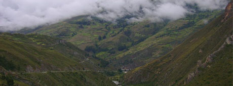

1
1 2
2 3
3 4
4 6
6 7
7 8
8Dos de Mayo
La Provincia peruana de Dos de Mayo es una de las once que conforman el Departamento de Huánuco, perteneciente a la Región Huánuco. Limita por el Norte con la Provincia de Huamalíes; por el Sur con las provincias de Lauricocha, Yarowilca y Huánuco; por el Este con las provincias de Leoncio Prado, Huánuco y Yarowilca, y por el Oeste con la provincia de Bolognesi, departamento de Áncash.
La Capital de la provincia de Dos de Mayo es La Unión. La Provincia de Dos de Mayo se divide en nueve distritos: La Unión, Chuquis, Marías, Pachas, Quivilla, Ripán, Shunqui, Sillapata, Yanas.
Creación
Esta provincia fue creada por Ley del 05 de noviembre de 1870 con su capital Aguamiro. Por Ley del 05 de febrero de 1875 se unieron los pueblos de Aguamiro y Ripán pero siempre separados por el río Vizcarra (Orgomayo), con la denominación Villa de La Unión. La Ley 5374 del 14 de diciembre de 1925 elevó a la categoría de ciudad y como tal, capital de la provincia.
Geografía
En el departamento de Huánuco se encuentra las tres cadenas montañosas de los Andes septentrionales del Perú: la occidental, la central y la oriental. Ha sido importante la función que han cumplido durante millones de años los ríos Marañón, Huallaga y Pachitea, configurando el territorio huanuqueño y generando a su vez, tres conjuntos espaciales bien diferenciados como son, la región cordillerana, los valles interandinos y las selvas. Dos de Mayo se ubica en el lado este del gran conjunto cordillerano, abarcando la mayor parte del territorio las regiones quechua, puna y suni.
La topografía es característica por la forma de embudo que tiene las cabeceras de cuenca en el río Vizcarra y en las nacientes del río Marañón, además de las extensas mesetas. El río más importante es el Vizcarra que desemboca hacia el joven río Marañón, que drena en dirección norte de la provincia.
La Unión: Capital de Dos de Mayo
El Distrito de La Unión es uno de los 9 distritos y la capital de la Provincia de Dos de Mayo, que se encuentra en el Departamento de Huánuco; ubicado en la Región Huánuco, Perú.
Se encuentra ubicado en la margen este del río Vizcarra que lo limita con el distrito de Ripán, que se ubica en su margen oeste, al lado sur en la provincia de Dos de Mayo, con una extensión de 187.28 Km2. y a una altitud de 3226 m.s.n.m.
Al crearse la provincia de Dos de Mayo en el año de 1870, el "Pueblo de Aguamiro" fue elegido como capital. Años más tarde, con Ley del 5 de febrero de 1875, se determinó que los pueblos de Aguamiro y Ripán, separadas únicamente por el río Ishpac, constituyan uno sólo con el nombre de "Villa de La Unión".